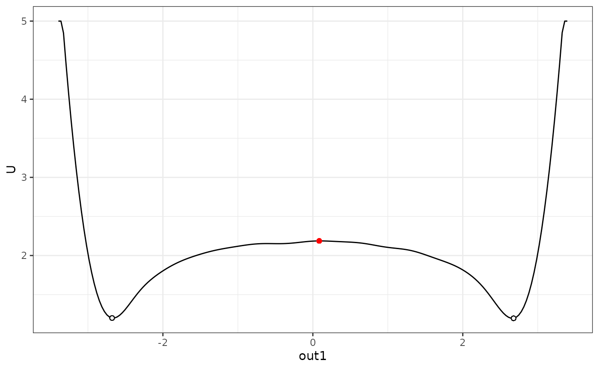
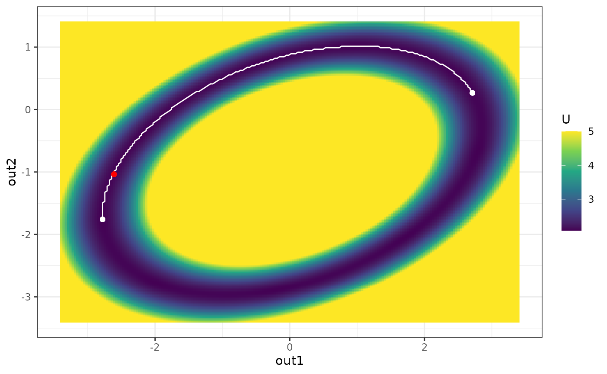
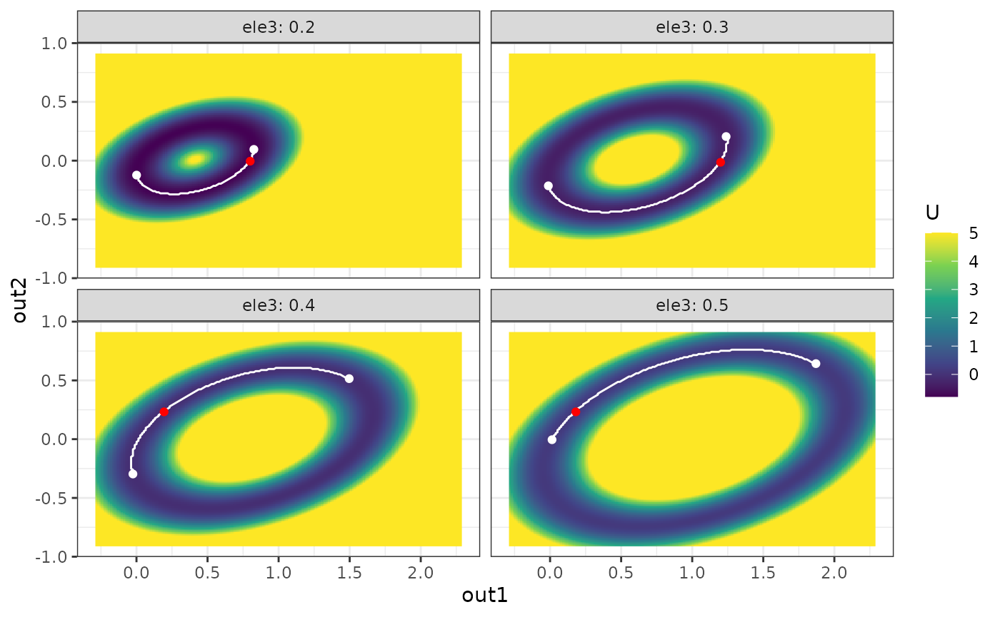

3. Calculate the lowest elevation path and barrier height between stable states
Jingmeng Cui
Source:vignettes/barrier.Rmd
barrier.RmdAn important property of the states in a landscape is their stability, characterized by the barrier height between these states and other adjacent states. simlandr also provides tools to calculate the barrier heights from landscapes.
You can use the general function calculate_barrier() to calculate the barrier for most landscapes. There are also specific calculate_barrier_*() functions available. The output of these functions is a `barrier object.
The barrier objects contain the potential function and the position of both states and the saddle point. For 3D landscapes, the lowest elevation path (LEP) is also provided. barriers can also be calculated for landscapes from multiple simulations. In this case, remember to set individual_landscape = TRUE in landscape construction functions.
The local minimums are searched in a square space around a given point. The point with the lowest potential value in the given region is set as the position of the stable state. If all the potential values in the region are equal to Umax (which represents ~Inf), the barrier calculation functions will expand the searching area automatically. Use expand = FALSE to disable this feature.
For landscapes from multiple simulations, the searching regions for their starting and ending points can be different. simlandr provides make_barrier_grid_2d() and make_barrier_grid_3d() functions to help you put these settings into a data frame with the correct format.
The barrier objects also provide a ggplot geom object that can be added to the landscape plots to show the starting (white), end (white), and saddle (red) points, as well as the LEP (white line, only for 3d landscapes). Use get_geom(b) to access those geoms.
Below are examples of different barrier calculations. See the help documents of those functions for further details.
Prepare data sets and landscapes (see vignette("landscape"))
single_test <- sim_fun_test(
par1 = list(var1 = 1),
par2 = list(var2 = 1, var3 = 0)
)
l_single_2d <- make_2d_density(single_test, x = "out1", from = -2, to = 2, adjust = 1)
l_single_3d <- make_3d_static(single_test, x = "out1", y = "out2", lims = c(-3, 3, -3, 3), h = 0.01, kde_fun = "ks")
#> Calculating the smooth distribution...
#> Done!
#> Making the plot...
#> Done!
#> Making the 2d plot...
#> Done!
batch_test <- new_var_set()
batch_test <- batch_test %>%
add_var("par2", "var3", 0, 0.5, 0.1)
batch_test_grid <- make_var_grid(batch_test)
batch_test_result <- batch_simulation(batch_test_grid, sim_fun_test,
default_list = list(
par1 = list(var1 = 0),
par2 = list(var2 = 0, var3 = 0)
),
bigmemory = FALSE
)
batch_test2 <- new_var_set()
batch_test2 <- batch_test2 %>%
add_var("par1", "var1", -0.2, 0.2, 0.2) %>%
add_var("par2", "var2", -0.2, 0.2, 0.2)
batch_test_grid2 <- make_var_grid(batch_test2)
batch_test_result2 <- batch_simulation(batch_test_grid2, sim_fun_test,
default_list = list(
par1 = list(var1 = 0),
par2 = list(var2 = 0, var3 = 0)
),
bigmemory = FALSE
)
l_batch_2d_m2 <- make_2d_matrix(batch_test_result2, x = "out1", rows = "var1", cols = "var2", from = -1, to = 1, adjust = 0.1, individual_landscape = TRUE)
#> Making the plot...
#> Done!
l_batch_3d_m2 <- make_3d_matrix(batch_test_result2, x = "out1", y = "out2", rows = "var1", cols = "var2", lims = c(-3, 3, -3, 3), h = 0.001, kde_fun = "ks", Umax = 10, individual_landscape = TRUE)
#> Making the 2d plot...
#> Done!
l_batch_3d_a <- make_3d_animation(batch_test_result, x = "out1", y = "out2", fr = "var3", Umax = 20, lims = c(-3, 3, -3, 3), h = 0.002, individual_landscape = TRUE)
#> Wrangling data...
#> Done!
#> Making the plot...
#> Done!
#> Making the 2d plot...
#> Done!
#> Making the 3d matrix...
#> Making the 2d plot...
#> Done!
#> Done!Frequently used parameters for the family of barrier functions:
start_location_value,end_location_value: the initial position (in value) for searching the start/end point; start_r,end_r: the searching (L1) radius for searching the start/end point.
Barrier calculation for 2d single landscape
b_single_2d <- calculate_barrier_2d(l_single_2d, start_location_value = -2, end_location_value = 2, start_r = 0.3, end_r = 0.3)
b_single_2d$local_min_start
#> $U
#> [1] 1.722065
#>
#> $location
#> x_index x_value
#> 1 -2
b_single_2d$local_min_end
#> $U
#> [1] 1.723732
#>
#> $location
#> x_index x_value
#> 512 2
b_single_2d$saddle_point
#> $U
#> [1] 2.167971
#>
#> $location
#> x_index x_value
#> 267.00000000 0.08219178
get_barrier_height(b_single_2d)
#> delta_U_start delta_U_end
#> 0.4459061 0.4442392
plot(l_single_2d) + get_geom(b_single_2d)
Barrier calculation for 3d single landscape
b_single_3d <- calculate_barrier_3d(l_single_3d, start_location_value = c(-2.5, -2), end_location_value = c(2.5, 0), start_r = 0.3, end_r = 0.3)
plot(l_single_3d, 2) + get_geom(b_single_3d)
Barrier calculation for 2d batch landscape
b_batch_2d_m2 <- calculate_barrier_2d_batch(l_batch_2d_m2, start_location_value = -0.35, end_location_value = 0.35, start_r = 0.34, end_r = 0.34)
plot(l_batch_2d_m2) + get_geom(b_batch_2d_m2)
Barrier calculation for 3d batch landscape
b_batch_3d_m2 <- calculate_barrier_3d_batch(l_batch_3d_m2, start_location_value = c(-1, -1), end_location_value = c(1, 1), start_r = 0.3, end_r = 0.3)
#> The U in this range is too high. Searching range expanded...
#> r = c(0.691959798994974,0.691959798994974)
#> The U in this range is too high. Searching range expanded...
#> r = c(0.752261306532662,0.752261306532662)
#> The U in this range is too high. Searching range expanded...
#> r = c(0.691959798994974,0.691959798994974)
#> The U in this range is too high. Searching range expanded...
#> r = c(0.691959798994974,0.691959798994974)
#> The U in this range is too high. Searching range expanded...
#> r = c(0.601507537688441,0.601507537688441)
#> The U in this range is too high. Searching range expanded...
#> r = c(0.571356783919597,0.571356783919597)
#> The U in this range is too high. Searching range expanded...
#> r = c(0.752261306532662,0.752261306532662)
#> The U in this range is too high. Searching range expanded...
#> r = c(0.752261306532662,0.752261306532662)
#> The U in this range is too high. Searching range expanded...
#> r = c(0.903015075376882,0.903015075376882)
#> The U in this range is too high. Searching range expanded...
#> r = c(0.903015075376882,0.903015075376882)
#> The U in this range is too high. Searching range expanded...
#> r = c(0.752261306532662,0.752261306532662)
#> The U in this range is too high. Searching range expanded...
#> r = c(0.752261306532662,0.752261306532662)
#> The U in this range is too high. Searching range expanded...
#> r = c(0.691959798994974,0.691959798994974)
#> The U in this range is too high. Searching range expanded...
#> r = c(0.631658291457285,0.631658291457285)
#> The U in this range is too high. Searching range expanded...
#> r = c(0.691959798994974,0.691959798994974)
#> The U in this range is too high. Searching range expanded...
#> r = c(0.691959798994974,0.691959798994974)
#> The U in this range is too high. Searching range expanded...
#> r = c(0.631658291457285,0.631658291457285)
#> The U in this range is too high. Searching range expanded...
#> r = c(0.691959798994974,0.691959798994974)
plot(l_batch_3d_m2) + get_geom(b_batch_3d_m2)
Set the starting and end values for each landscape
b_batch_3d_a <- calculate_barrier(l_batch_3d_a, start_location_value = c(0,0), end_location_value = c(2, 1), start_r = 0.3, end_r = 0.6)
#> The U in this range is too high. Searching range expanded...
#> r = c(1.83618090452261,1.83618090452261)
#> The U in this range is too high. Searching range expanded...
#> r = c(1.41407035175879,1.41407035175879)
#> The U in this range is too high. Searching range expanded...
#> r = c(1.02211055276382,1.02211055276382)
plot(l_batch_3d_a, 3) + get_geom(b_batch_3d_a)
## This barrier calculation doesn't find proper local minimums for several landscapes. Specify the searching parameters per landscape manually.
## First, print a template of the data format.
make_barrier_grid_3d(batch_test_grid, start_location_value = c(0,0), end_location_value = c(2, 1), start_r = 0.3, end_r = 0.6, print_template = TRUE)
#> structure(list(start_location_value = list(c(0, 0), c(0, 0),
#> c(0, 0), c(0, 0), c(0, 0), c(0, 0)), start_r = list(c(0.3,
#> 0.3), c(0.3, 0.3), c(0.3, 0.3), c(0.3, 0.3), c(0.3, 0.3), c(0.3,
#> 0.3)), end_location_value = list(c(2, 1), c(2, 1), c(2, 1), c(2,
#> 1), c(2, 1), c(2, 1)), end_r = list(c(0.6, 0.6), c(0.6, 0.6),
#> c(0.6, 0.6), c(0.6, 0.6), c(0.6, 0.6), c(0.6, 0.6))), row.names = c(NA,
#> -6L), class = c("var_grid", "data.frame"))
#> var_list var3 start_location_value start_r end_location_value end_r
#> 1 0 0.0 0, 0 0.3, 0.3 2, 1 0.6, 0.6
#> 2 0.1 0.1 0, 0 0.3, 0.3 2, 1 0.6, 0.6
#> 3 0.2 0.2 0, 0 0.3, 0.3 2, 1 0.6, 0.6
#> 4 0.3 0.3 0, 0 0.3, 0.3 2, 1 0.6, 0.6
#> 5 0.4 0.4 0, 0 0.3, 0.3 2, 1 0.6, 0.6
#> 6 0.5 0.5 0, 0 0.3, 0.3 2, 1 0.6, 0.6
## Then, modify the parameters as you want, and send this `barrier_grid` to the barrier calculation function.
b_batch_3d_a <- calculate_barrier_3d_batch(
l_batch_3d_a,
make_barrier_grid_3d(batch_test_grid,
df =
structure(list(start_location_value = list(
c(0, 0), c(0, 0),
c(0, 0), c(0, 0), c(0, 0), c(0, 0)
), start_r = list(c(
0.1,
0.1
), c(0.2, 0.2), c(0.2, 0.2), c(0.3, 0.3), c(0.3, 0.3), c(
0.3,
0.3
)), end_location_value = list(c(0, 0), c(
1,
0.5
), c(1, 0.5), c(1.8, 0.8), c(2, 1), c(2, 1)), end_r = c(
0.6, 0.6,
0.6, 0.6, 0.6, 0.6
)), row.names = c(NA, -6L), class = c(
"var_grid",
"data.frame"
))
)
)
plot(l_batch_3d_a, 3) + get_geom(b_batch_3d_a)
#> geom_path: Each group consists of only one observation. Do you need to adjust
#> the group aesthetic?
## Now it works well.